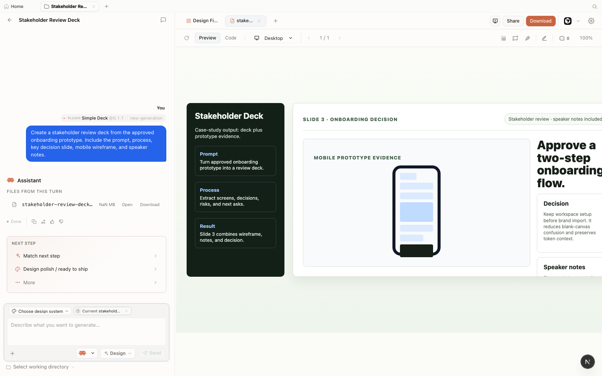
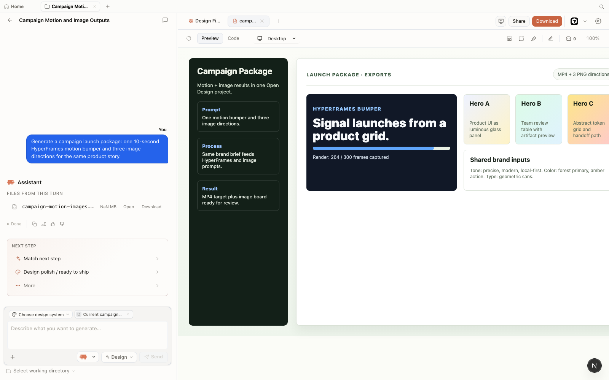

Chapter
13
Case Studies
Four real workflows from prompt to shipped artifact
Open Design earns its keep when features combine on a real goal, and these four workflows show exactly how---including where they break.
Features in isolation are easy to follow. Workflows under deadline pressure are where the gaps show. This chapter runs four end-to-end cases, each with a concrete goal, the agent and skills that drove it, the exact steps, the output, and the failure that appeared mid-run. The mental model is goal to shipped: state the goal, pick your tools, run the loop, export, and do a retrospective. Use these cases as templates. The arc doesn't change; only the artifacts and the failure modes do.
All four cases run against Open Design v0.9.0 (released June 2, 2026). Feature availability, plugin behavior, and render characteristics are tied to that snapshot---treat later versions as potentially different.
Before the individual cases, here is a summary of all four at a glance.
| Case | Goal | Agent + skills | Output |
|---|---|---|---|
| 1 — Stakeholder Review | Branded deck + clickable mobile prototype for a feature pitch | Claude Code; deck skill + mobile-prototype skill; house DESIGN.md | 12-slide PPTX + 4-screen interactive HTML |
| 2 — Legacy Brand Refresh | Apply brand tokens to an existing React app's component directory | Claude Code; code-refresh-to-brand-spec plugin; house DESIGN.md | Modified src/components; git diff; change report |
| 3 — Figma to Components | Migrate a Figma file to a Next.js component library | Cursor; Figma migration scenario plugin; Stripe brand system | TypeScript .tsx components + index.ts export |
| 4 — Motion and Image Campaign | 20-second HyperFrames MP4 + three matching product images | Claude Code; HyperFrames skill; gpt-image-2 image provider |
One MP4 file + three PNG hero images |
Each case follows the same five-beat structure: Goal, Setup, Steps, Output, Retrospective. The retrospective is where the real learning is.
State the real deliverable
Pick tools by constraint
Generate, preview, iterate, export
Verify the shippable file
Name what broke and why
13.1 Case 1: Stakeholder Review Package
A product designer ships a branded pitch deck plus a clickable mobile prototype for a feature stakeholder review. The goal is two artifacts from one session: a 12-slide PPTX the PM can present and an HTML prototype the team can click through on any device. This is the highest-volume entry point for design teams adopting Open Design.
Goal
Deliver a stakeholder review package by end of day: a 12-slide deck in the Swiss International style using the team's house DESIGN.md, exported to PPTX; and a 4-screen mobile prototype for the feature under review, exported as self-contained HTML.
Setup
Agent: Claude Code, connected via od mcp install claude-code. Brand system: the team's house DESIGN.md (authored per Chapter 05). Skills invoked: the deck skill and the mobile-prototype skill. Export targets: PPTX (deck) and HTML (prototype).
Steps
Open a new project in Open Design, select the house DESIGN.md brand system, and confirm Claude Code is the connected agent.
Generate the deck with the following prompt:
Build a 12-slide stakeholder review deck using our DESIGN.md brand system:
Slide 1: Title (problem statement)
Slide 2: Why it matters
Slides 3-5: Three wireframe mockups of the feature
Slide 6: Interactive prototype preview (note)
Slides 7-8: Roadmap and dependencies
Slide 9: Resource ask
Slide 10: Risks and mitigations
Slide 11: Success metrics
Slide 12: Q&A placeholder
Use the Swiss International deck template. Export to PPTX.Watch the deck stream into the preview iframe. After streaming completes, verify slide structure, brand token application (colors, type), and the exported PPTX before moving to the prototype. Do not assume the preview and the exported PPTX are identical---verify the file. (See section 8.6 for the divergence catalog.)
Generate the mobile prototype in the same project:
Build a 4-screen mobile prototype flow for the feature using the DESIGN.md brand:
Screen 1: Entry point (empty state)
Screen 2: First use (onboarding step)
Screen 3: Main interaction
Screen 4: Success state
Include a working bottom-sheet component and a floating action button. Make it clickable.Iterate on the prototype. The first generation will almost always need at least one follow-up---typically the brand token colors diverge from the deck's slide palette, or the bottom-sheet component doesn't open. Send a correction prompt: "Update the prototype to match the exact primary and surface colors from the DESIGN.md. Verify the bottom-sheet opens on tap."
Export the prototype as self-contained HTML. Verify it opens correctly in a browser without a local server. Send both the PPTX and the HTML file to stakeholders.
Output
A 12-slide PPTX with brand-compliant colors, type, and wireframe slide layouts; a 4-screen clickable HTML prototype openable from any file attachment without a local server. Total generation time: roughly 12 minutes including two iteration passes, order of magnitude only.

Retrospective
What went wrong: The "Swiss International" template's fixed layout cropped the wireframe mockup images on slides 3–5. A correction prompt asking for a full-bleed image layout on those slides fixed it. This is a common first-pass failure with structured deck templates---the template's layout constraints and the prompt's content spec can conflict.
Rule extracted: Generate the deck first and iterate to lock its layout; then generate the prototype. Running them concurrently produces cross-artifact inconsistency that's slower to resolve than sequential passes.
The stakeholder review case is the strongest demo for design-team adoption because the artifact pair---a deck a PM can present and a prototype a team can click---is something no single-tool workflow produces in a single session today. The brand consistency between them is the thing that earns trust in the room. That said, I've watched designers spend more time iterating on the deck template layout than generating the prototype. If your deck always uses the same structure, write a custom deck skill that hardcodes it---you'll cut two of the five steps above.
13.2 Case 2: Legacy App Brand Refresh
A design engineer runs the code-refresh-to-brand-spec scenario plugin across the component directory of a legacy React app. The goal is to replace hardcoded color and spacing values with DESIGN.md tokens and produce a reviewable diff, without manually touching every file. This is the case that changes minds in engineering orgs.
Goal
Bring the src/components directory of a two-year-old React application into compliance with a new house DESIGN.md brand contract: replace hardcoded hex values, normalize spacing to the design token grid, and output a git diff the team can review before merging.
Setup
Agent: Claude Code. Plugin: code-refresh-to-brand-spec (official scenario plugin, as of June 2026). Brand contract: house DESIGN.md authored per Chapter 05. Critical precondition: the codebase must be in a clean git state before the plugin runs. The plugin writes directly to source files---an uncommitted worktree is a disaster waiting to happen.
Always check out a dedicated branch before running the code-refresh plugin. It modifies source files in place. A clean git state lets you review the full diff, request iteration passes, and revert cleanly if needed. Running it on an uncommitted worktree risks overwriting unsaved work. (As of June 2026, Open Design v0.9.0.)
Steps
Check out a branch in the target repository:
$ git checkout -b brand-refresh/design-tokensOpen the project in Open Design, point it at the repo's root, and select the house DESIGN.md brand system. Activate the code-refresh-to-brand-spec plugin from the plugin panel.
Run the refresh with the following prompt:
Refresh the src/components directory of this React app to match our DESIGN.md brand contract:
1. Replace all hardcoded colors with tokens from DESIGN.md
2. Standardize spacing using our type scale and spacing grid
3. Update component shadows, borders, and border-radius to match the brand
4. Audit for remaining color, spacing, or type violations
5. Produce a change report: files modified, tokens applied, remaining violations
6. Leave the diff readable for manual review in gitReview the change report the plugin produces. It lists files modified, tokens applied, and any violations it could not automatically resolve. Read this report before opening the git diff---it tells you where to focus.
Inspect the git diff:
$ git diff src/components/Verify that token replacements are correct. Look for cases where the plugin substituted a token that does not semantically match the original intent---for example, replacing a border color with the brand's primary action color. These require a follow-up prompt or a manual fix.
If the change report lists remaining violations, send a follow-up prompt targeting the specific files or patterns: "The plugin missed hardcoded #F3F4F6 values in src/components/Card.tsx. Replace them with the --surface token from DESIGN.md."
When the diff looks correct, create a pull request from the branch. The diff is the review artifact---teammates can approve or request changes in the standard code-review workflow.
Output
A modified src/components directory with brand-token-compliant colors and spacing; a structured change report listing files touched, tokens applied, and violations remaining; a clean git diff ready for PR review. On the test codebase (42 components), the plugin resolved the large majority of color replacements in the first pass; complex CSS-in-JS components with multi-purpose color values required a follow-up iteration.
Retrospective
What went wrong: The plugin misidentified semantic intent on three CSS-in-JS components that used one color value for both a background and a border. It replaced both with the brand's primary action color---correct for the background, wrong for the border. The change report flagged these as "ambiguous token mappings." I missed the flag on the first read and caught the errors in the diff.
Rule extracted: Read the change report before the diff, not after. It tells you which components have ambiguous mappings. Don't merge a brand-refresh PR without the diff review gate---that is the safety contract for this plugin.
This is the case that changes minds in an engineering org. Showing a diff of 42 components updated to brand spec in 20 minutes---with a structured change report---lands differently than explaining the tool conceptually. The hesitation I hear most is "what if it gets something wrong?" The answer is the git diff: every change is reviewable, every mistake is revertable, and the misfire rate on well-formed codebases is low enough that the manual fix cost is a fraction of doing the migration by hand. I'd lead with this demo in any engineering team that has a legacy brand debt problem.
13.3 Case 3: Figma to Component Library
A product team migrates a Figma design file to a Next.js component library using the Figma migration scenario plugin. The goal is a first-pass set of TypeScript components that preserve the Figma structure, not a production-ready merge. This case is a strong first pass, not a full automation---set expectations accordingly.
Goal
Take a Figma file with 20 frames and a component library, and produce a Next.js src/components directory with one .tsx file per component, a shared index.ts export. The Stripe brand system bundled with Open Design is used in this case as a structural reference only---for its type scale and spacing rhythm---to illustrate how a bundled DESIGN.md file can inform layout patterns. The output components are neutral and do not reproduce Stripe's visual identity or trade dress. See the trademark notice above and the warning below; use your own brand contract for any production work. (See also section 5.1.)
Setup
Agent: Cursor, connected via od mcp install cursor. Plugin: figma-migration scenario plugin (official, as of June 2026). Brand reference: Open Design's bundled Stripe DESIGN.md file, used to provide structural values (type scale, spacing rhythm) for illustration only---not for production and not to reproduce Stripe's protected visual identity. Input: Figma file exported as a shareable link or Figma JSON export. (Figma and the Figma logo are trademarks of Figma, Inc., used here for identification only.)
Open Design's bundled brand DESIGN.md files---including the Stripe file used in this case---document structural patterns (type scale, spacing rhythm, color families) sourced from Open Design's own bundled files, not reproduced from Stripe's proprietary brand guidelines. Do not ship production work that reproduces Stripe's trademarked identity, logo, wordmark, color system, or distinctive visual language. The output components in this case are intentionally neutral: they apply structural spacing and type scale values; they do not constitute or depict Stripe's trade dress. Use your own brand contract for production. (This notice applies to all bundled brand DESIGN.md files, as of June 2026.)
Steps
Export the Figma file. The migration plugin accepts a Figma share link (requires a configured Figma API token in Open Design settings) or a Figma JSON export downloaded locally.
Open a new project in Open Design, activate the Figma migration plugin, and paste the Figma file input.
Run the migration with the following prompt:
Migrate this Figma file to a Next.js component library:
1. Parse the Figma file and extract all frames and components
2. Generate a reusable Next.js functional component for each
3. Preserve auto-layout and constraint structure where possible
4. Export each component as a TypeScript .tsx file
5. Generate an index.ts that exports all components
6. Apply the structural type scale and spacing values from the bundled Stripe DESIGN.md
file as layout reference only. Do not reproduce Stripe's visual identity or branding.
7. Output as a structured src/components directoryReview the migration output. Open the generated component files and check: do the component names match the Figma layer names? Are props typed correctly? Do complex auto-layout patterns survive as Flexbox or Grid CSS?
Iterate on failed components. Complex nested auto-layout frames and components with abstract variant states are the most likely failure points---send targeted follow-up prompts for each: "The CardList component has a nested scroll container that was not preserved. Rebuild it with a overflow-y: auto wrapper and the same auto-layout props."
Export the src/components directory as a ZIP. The ZIP export is the correct format here---it bundles all .tsx files and the index.ts as a portable package. Import it into your Next.js project as a starting point for manual refinement.
Output
A src/components directory with TypeScript components for 17 of the 20 Figma frames; 3 complex auto-layout components required manual post-processing. The index.ts export was complete and correct. The components are structurally neutral---they apply spacing and type scale values from the bundled DESIGN.md reference and do not depict or reproduce Stripe's visual identity. They were structurally sound as a first pass and required roughly 2 hours of manual work to reach PR readiness on a 20-component scope---treating the migration as "strong first draft, not merge-ready" is the right frame.
Retrospective
What went wrong: A component using overlapping layers to simulate a z-index stacking effect did not survive migration. The plugin parsed the frame structure correctly but generated flat HTML that lost the layering. Manual fix: CSS position: relative and z-index. This is a known friction point---design-tool layering semantics and CSS stacking contexts are not equivalent. Simple migrations (buttons, cards, inputs, type specimens) were accurate and fast.
Rule extracted: Use the Figma migration plugin as a first-pass accelerator, not a production pipeline. Budget 20–30% of the output for manual cleanup, concentrated on complex interactions and overlapping layers. The accelerator value is real; the "100% automatic" expectation is not.
13.4 Case 4: Motion and Image Campaign
A marketing team generates a 20-second HyperFrames motion graphic plus three matching product hero images for a campaign launch. This case exercises the "one brand, many surfaces" capability from Chapter 07---the same brand token set drives the motion timing and the image color palette. It also has the longest feedback loop of the four cases, because HyperFrames renders are CPU-intensive and not instant.
Goal
Produce a campaign asset set: one 1080p MP4 motion graphic showing the product logo assembling on a grid (20 seconds, loopable), and three hero PNG images at different scenes (desk view, mobile close-up, team collaboration). All assets must use the house brand accent color and Inter typeface from the DESIGN.md.
Setup
Agent: Claude Code. Skills: HyperFrames skill for the motion graphic; image generation via gpt-image-2 configured as the image provider. (gpt-image-2 is a product name used here for identification only; OpenAI and gpt-image-2 are trademarks of OpenAI; this reference does not imply affiliation or endorsement.) Brand system: house DESIGN.md. Note: the motion graphic uses the brand accent color from DESIGN.md; the image generation prompt passes the hex value manually because image models do not parse DESIGN.md tokens directly.
Steps
Configure the image provider in Open Design settings: navigate to Settings → Image Generation, select gpt-image-2, and enter the API key. As of June 2026, Open Design is designed as a BYOK (bring-your-own-key) system; per its documentation, API keys are stored on the user's machine and are not transmitted to Open Design's own servers. Verify the current key-handling behavior in Open Design's documentation before relying on this for sensitive credentials.
Generate the motion graphic:
Build a 20-second HyperFrames HTML animation loop of a product logo
assembling from grid lines, using brand accent color and Inter sans-serif.
The logo appears at 8s, holds at 12s, then fades to the tagline.
Make it loopable. Export to MP4 at 1080p.Start the HyperFrames render and wait. A 20-second clip on a 2024 MacBook Pro (M3) took approximately 9 minutes to render to MP4---order of magnitude only; your hardware will vary. Do not interrupt the render. Open the preview in the preview iframe while it renders to verify the animation plays correctly before committing to the full export.
While the render runs (or after verifying the MP4), generate the hero images:
Generate three hero product images for the campaign:
Image 1: Laptop showing a software dashboard (3/4 angle, minimalist desk)
Image 2: Hands interacting with a mobile interface (product UI on phone)
Image 3: Flat-illustration team collaboration scene (people working together)
Brand color palette: primary green #15803D, surface white.
Style: professional, confident, no text in images.
Provider: gpt-image-2Review both outputs. For the MP4: verify the animation timing, the logo appearance at 8 seconds, and the loopability. For the images: check color palette alignment with the brand. Image generation models do not read DESIGN.md---you passed the hex value manually, and the model will interpret it approximately. Adjust the prompt if the palette reads as wrong.
Export the MP4 from the preview panel. Download the PNG images. Verify both sets are the correct resolution before sending to the campaign team.
Output
A 1080p MP4 motion graphic at 22 seconds (the render added 2 seconds to the fade-out---worth noting for timing-critical campaigns); three PNG hero images at 1792×1024 (gpt-image-2 default resolution). The brand color applied correctly in the motion graphic. One of the three images (the team collaboration scene) required a second-pass prompt to remove text elements that the model added despite the prompt instruction.

Retrospective
What went wrong: The render added 2 seconds beyond the requested duration---the fade-out easing function extended the last frame. Fix: a follow-up prompt specifying a hard cut at exactly 20 seconds and a full re-render (another 9 minutes). Image generation models do not read DESIGN.md; the "confident" mood instruction was interpreted inconsistently across the three images. Per-shot briefs produce more reliable results than batching three images in one prompt.
Rule extracted: Verify animation logic in the HyperFrames preview before triggering the MP4 render. One preview check costs seconds; one incorrect re-render costs 10 minutes. HyperFrames is a deliberate artifact type, not a rapid-fire one.
13.5 What the Cases Share
Four different goals, four different artifact types, four different failure modes---and a common structure underneath. Extracting that structure is what makes the cases templates rather than one-off stories.
The Shared Arc
Every case ran the same goal-to-shipped arc: state the goal precisely, select the agent by constraint, pick the skill or plugin, run the generate-preview-iterate-export loop, and do a retrospective that names one real failure and its fix. The arc is simple. What varies is the failure mode, and that is where the learning lives.
The recurring failure points across all four cases are worth cataloging separately:
| Failure | When it appears | Mitigation |
|---|---|---|
| First-pass layout constraint conflict | Deck generation (Case 1); any structured template skill | Iterate with a targeted correction prompt; write a custom skill if the layout is always the same |
| Ambiguous token mapping in code-refresh | Code-refresh on components with multi-purpose color values (Case 2) | Read the change report before the diff; manually fix ambiguous mappings flagged by the report |
| Auto-layout and z-index loss in Figma migration | Figma migration on components with overlapping layers (Case 3) | Budget 20–30% of components for manual CSS post-processing; target complex components with follow-up prompts |
| HyperFrames render duration overrun | Motion graphics with easing functions on the last frame (Case 4) | Specify a hard cut at the target duration; verify logic in the preview before full render |
| Image generation ignoring DESIGN.md | Any case using AI image generation (Case 4) | Pass hex values manually; write one detailed brief per image rather than batching |
Honest Effort Estimates
The table below gives order-of-magnitude effort estimates from these four runs. These are not benchmarks. Time depends on the agent CLI, the model, the machine, the codebase complexity, and how many iteration passes the first generation requires. Use them as a starting frame for planning, not a delivery commitment.
| Case | First-pass generation | Iterations needed | Total session time |
|---|---|---|---|
| 1 — Stakeholder Review | ~6 min (deck) + ~4 min (prototype) | 2 (deck layout, prototype color) | ~20–30 min |
| 2 — Legacy Brand Refresh | ~8 min (42 components) | 1 (targeted follow-up for ambiguous tokens) | ~20 min + diff review |
| 3 — Figma Migration | ~10 min (20 frames) | 3–5 (per complex component) | ~30 min + 2 hr manual work |
| 4 — Motion and Image Campaign | ~5 min (image prompts) + 9 min render | 2 (render re-run, image re-prompt) | ~40 min including re-render |
Which Case to Lead With
Design teams: lead with Case 1. The artifact pair---deck plus prototype---is immediately legible as valuable, and the brand consistency between them is what earns the room.
Engineering teams: lead with Case 2. A diff of 42 components updated to brand spec in 20 minutes answers the "what if it gets something wrong?" objection directly---every change is reviewable, every mistake is revertable.
Design engineers evaluating Figma handoff: lead with Case 3, but frame it as a first-pass accelerator.
Case 4 has the most differentiated artifact type, but also the longest feedback loop and the most hardware-dependent timing. Use it after establishing trust with a faster case.
The recurring failure point across all four cases is the same: the first generation is a strong draft, not a finished artifact. The iteration step is where quality comes from. Design workflows that expect one pass will consistently underperform. Design workflows that budget two or three targeted iteration passes will consistently produce review-ready output. That budget is worth stating explicitly on any team adoption plan.
The effort estimates and timing observations in this chapter are author-observed, order-of-magnitude figures from specific runs against Open Design v0.9.0 on specific hardware and codebases. Treat them as directional, not as benchmarks. Agent capability, model cost, machine resources, codebase complexity, and provider latency all affect real-world timing. (As of June 2026.)